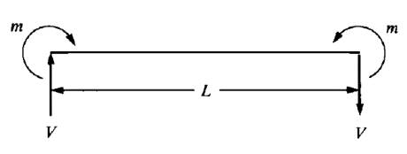
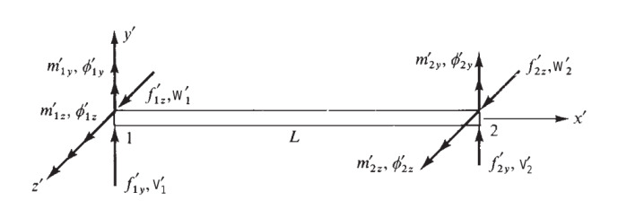

Materyel Mekaniği - 11
Üç boyutta herhangi bir yönde olabilecek bir kiriş öğesinin direngenlik matrisini bu bölümde geliştirelim [2, sf. 281]. Bunu yapabilmek için daha önce gördüğümüz eksenel, iki boyutlu kiriş, burulma direngenlik matrislerini birleştireceğiz.
İki boyuttaki kirişin mekanığı bükülme alttaki gibiydi [1],


Şimdi işaretler alttaki gibi olacak,

İki boyutlu kiriş matrisini [1] iki kez kullanacagiz, ilki $x-z$ düzlemi icin, ikincisi $x-y$ düzlemi için,
$x-z$ düzlemi
$$ \frac{EI_y}{L^4} \left[\begin{array}{cccc} 12L & -6L & -12L & -6L^2 \\ & 4L^3 & 6L^2 & 2L^3 \\ & & 12L & 6L^2 \\ & & & 4L^3 \end{array}\right] \qquad (1) $$
$x-y$ düzlemi
$$ \frac{EI_y}{L^4} \left[\begin{array}{cccc} 12L & 6L & -12L & 6L^2 \\ & 4L^3 & -6L^2 & 2L^3 \\ & & 12L & -6L^2 \\ & & & 4L^3 \end{array}\right] \qquad (2) $$
Dikkat edersek $x-y$ düzleminin matrisi [1] matrisi ile aynı. $x-z$ düzlemi matrisinin bazı işaretleri farklı, bunun sebebi düzlemdeki bükülmenin sağ el kuralına göre farklı yönleri gösterebilmesi. Mesela [1]'deki
$$ m_1 = -m = -EI \frac{\mathrm{d}^2 v(0)}{\mathrm{d} x^2} = \frac{EI}{L^3} ( 6L v_1 + 4L^2 \phi_1 - 6L v_2 + 2 L^2 \phi_2 ) $$
formülünü hatırlarsak, o formülde bir uçta $m$ diğer üçta $-m$ vardı, fakat üstteki figürde $x-z$ düzlemindeki iki uçtaki $m$ değerleri aynı işarettedir, sağ el kuralını düşünürsek $x-z$'deki bükülme 1 noktasında kağıttan bize doğru gösteriyor, 2 noktasında aynı şekilde. O zaman üstteki formüldeki işaretler değişir,
$$ \Rightarrow \frac{EI}{L^3} ( -6L v_1 - 4L^2 \phi_1 + 6L v_2 - 2 L^2 \phi_2 ) $$
Bir değişim daha açılarda, üstteki formülde $\phi_1,\phi_2$ olan acılar, üç boyuttaki üstteki şekilde bunlar $\phi_{1y}$ ve $\phi_{2y}$. Bu açılar iki boyutlu durumun aksine artı yönde tam ters işaretli, tersi yönde bir yer değişim $v_1,v_2$'ye sebep oluyorlarlar, bu yüzden o işaretler de tersine dönüyor, notasyonu da düzeltince,
$$ \Rightarrow \frac{EI}{L^3} ( -6L v_1 + 4L^2 \phi_{1y} + 6L v_2 + 2 L^2 \phi_{2y} ) $$
Böylece matrisin ikinci satırında $-6,+4,+6,+2$ katsayılarını elde ediyoruz. Bu işaretlerin (1) matrisinin ikinci satırıyla aynı olduğunu görebiliriz, diğer satırlar benzer şekilde değiştiriliyorlar.
Üstdüşüm (Süperposition)
Artık bahsedilen matrisleri birleştirebiliriz. Bu üstdüşümü sympy ile
otomatik olarak yapacağız, daha önce sayısal değerler için kullandığımız
expand_dataframe kodu yine kullanılabilecek, çünkü kod bir pandas
Dataframe'i baz alıyor, bu Dataframe içinde herhangi bir obje depolamak mümkün,
oraya sayılar yerine sympy sembolik matematik objeleri koyabiliriz. Bir
bonus ta elde ediyoruz, toplama işlemi sympy tipleri için önceden
tanımlıdır, yani eğer üstdüşüm sırasında çakışma olursa, sembolik objeler
birbiriyle toplanacaktır!
from sympy import symbols, pprint, latex
from sympy.matrices import Matrix
import pandas as pd
pd.set_option('display.max_columns', None)
all_vars = ['u1','v1','w1','phi1x','phi1y','phi1z',\
'u2','v2','w2','phi2x','phi2y','phi2z']
A,G,J,E,L,Iy,Iz = symbols("A,G,J,E,L,Iy,Iz")
Önce üstte bahsedilen iki düzlemi alalım,
# x-z
vars1 = ['w1','phi1y','w2','phi2y']
M1 = pd.DataFrame([[12*L, -6*L**2,-12*L,-6*L**2],
[-6*L**2,4*L**3,6*L**2,2*L**3],
[-12*L,6*L**2,12*L,6*L**2],
[-6*L**2,2*L**3,6*L**2,4*L**3]],index=vars1)
M1.columns = vars1
M1 = M1 * (E*Iy/L**4 )
# x-y
vars2 = ['v1','phi1z','v2','phi2z']
M2 = pd.DataFrame([[12*L, 6*L**2,-12*L,6*L**2],
[6*L**2,4*L**3,-6*L**2,2*L**3],
[-12*L,-6*L**2,12*L,-6*L**2],
[6*L**2,2*L**3,-6*L**2,4*L**3]],index=vars2)
M2.columns = vars2
M2 = M2 * (E*Iz/L**4 )
Şimdi [1]'deki eksenel yükleri tanımlayan makaskiriş direngenlik matrisini alalım,
# Eksenel Yuk
vars3 = ['u1','u2']
M3 = pd.DataFrame([[1,-1],[-1,1]],index=vars3)
M3.columns = vars3
M3 = M3 * (A*E/L)
[4]'te tanımladığımız burulma mekanığının matrisini belirtelim,
# Burulma (Torsion)
vars4 = ['phi1x','phi2x']
M4 = pd.DataFrame([[1,-1],[-1,1]],index=vars3)
M4.columns = vars4
M4 = M4 * (G*J/L)
Hepsini üstdüşüm ile birleştirelim,
import sys; sys.path.append('../phy_020_strs_08')
import dfutil
M1f = dfutil.expand_dataframe(M1,all_vars)
M2f = dfutil.expand_dataframe(M2,all_vars)
M3f = dfutil.expand_dataframe(M3,all_vars)
M4f = dfutil.expand_dataframe(M4,all_vars)
Mall = M1f + M2f + M3f + M4f
Sonuç matrisini bir dosyaya yazalım,
Mall = Mall.apply(np.vectorize(lambda x: latex(x)))
fout = open('matrix1.tex','w')
fout.write ('$$\\\\left[\\\\begin{array}{cccccccccccc}')
fout.write('\n')
for x,y in Mall.iterrows():
row = ' & '.join(list(y)) + '\\\\\\\\'
row = row.replace('0.0','0')
fout.write(row)
fout.write('\n')
fout.write ('\\\\end{array}\\\\right]$$')
fout.close()
Ve kodu belgeye dahil edelim, matris alttaki gibi olacak,
$$\left[\begin{array}{cccccccccccc} \frac{A E}{L} & 0 & 0 & 0 & 0 & 0 & - \frac{A E}{L} & 0 & 0 & 0 & 0 & 0\ 0 & \frac{12 E Iz}{L^{3}} & 0 & 0 & 0 & \frac{6 E Iz}{L^{2}} & 0 & - \frac{12 E Iz}{L^{3}} & 0 & 0 & 0 & \frac{6 E Iz}{L^{2}}\ 0 & 0 & \frac{12 E Iy}{L^{3}} & 0 & - \frac{6 E Iy}{L^{2}} & 0 & 0 & 0 & - \frac{12 E Iy}{L^{3}} & 0 & - \frac{6 E Iy}{L^{2}} & 0\ 0 & 0 & 0 & \frac{G J}{L} & 0 & 0 & 0 & 0 & 0 & - \frac{G J}{L} & 0 & 0\ 0 & 0 & - \frac{6 E Iy}{L^{2}} & 0 & \frac{4 E Iy}{L} & 0 & 0 & 0 & \frac{6 E Iy}{L^{2}} & 0 & \frac{2 E Iy}{L} & 0\ 0 & \frac{6 E Iz}{L^{2}} & 0 & 0 & 0 & \frac{4 E Iz}{L} & 0 & - \frac{6 E Iz}{L^{2}} & 0 & 0 & 0 & \frac{2 E Iz}{L}\ - \frac{A E}{L} & 0 & 0 & 0 & 0 & 0 & \frac{A E}{L} & 0 & 0 & 0 & 0 & 0\ 0 & - \frac{12 E Iz}{L^{3}} & 0 & 0 & 0 & - \frac{6 E Iz}{L^{2}} & 0 & \frac{12 E Iz}{L^{3}} & 0 & 0 & 0 & - \frac{6 E Iz}{L^{2}}\ 0 & 0 & - \frac{12 E Iy}{L^{3}} & 0 & \frac{6 E Iy}{L^{2}} & 0 & 0 & 0 & \frac{12 E Iy}{L^{3}} & 0 & \frac{6 E Iy}{L^{2}} & 0\ 0 & 0 & 0 & - \frac{G J}{L} & 0 & 0 & 0 & 0 & 0 & \frac{G J}{L} & 0 & 0\ 0 & 0 & - \frac{6 E Iy}{L^{2}} & 0 & \frac{2 E Iy}{L} & 0 & 0 & 0 & \frac{6 E Iy}{L^{2}} & 0 & \frac{4 E Iy}{L} & 0\ 0 & \frac{6 E Iz}{L^{2}} & 0 & 0 & 0 & \frac{2 E Iz}{L} & 0 & - \frac{6 E Iz}{L^{2}} & 0 & 0 & 0 & \frac{4 E Iz}{L}\ \end{array}\right]$$ Bu matrisin [2, sf. 282]'deki matris ile aynı olduğunu göreceğiz.
Kaynaklar
[1] Bayramlı, Fizik, Materyel Mekanigi 7
[2] Logan, A First Course in the Finite Element Method, 6th Ed
[3] Witt Concepts and Apps of FEM
[4] Bayramlı, Fizik, Materyel Mekanigi 9
Yukarı